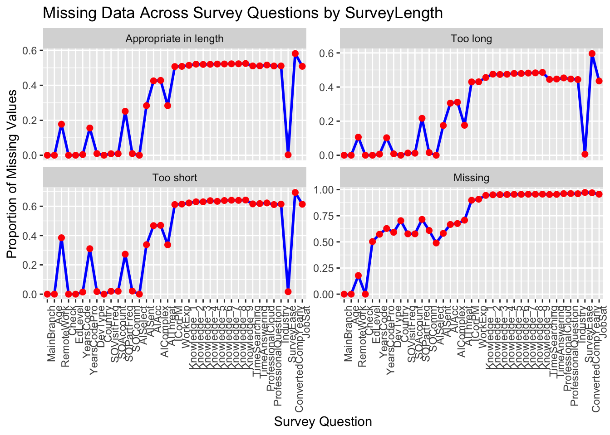
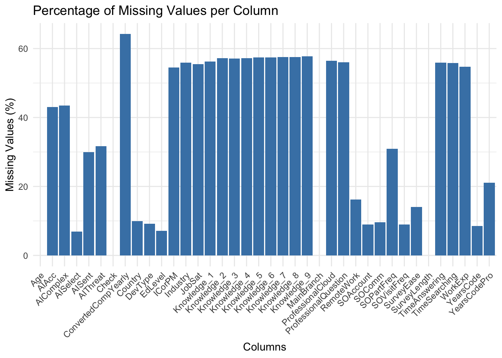

Code
survey <- read.csv('data/survey_results_public.csv')survey <- read.csv('data/survey_results_public.csv')keep <- c('MainBranch', 'Age', 'RemoteWork', 'Check', 'EdLevel', 'YearsCode', 'YearsCodePro', 'DevType', 'Country', 'SOVisitFreq', 'SOAccount', 'SOPartFreq', 'SOComm', 'AISelect', 'AISent', 'AIAcc', 'AIComplex', 'AIThreat', 'ICorPM', 'WorkExp', 'Knowledge_1', 'Knowledge_2', 'Knowledge_3', 'Knowledge_4', 'Knowledge_5', 'Knowledge_6', 'Knowledge_7', 'Knowledge_8', 'Knowledge_9', 'TimeSearching', 'TimeAnswering', 'ProfessionalCloud', 'ProfessionalQuestion', 'Industry', 'SurveyLength', 'SurveyEase', 'ConvertedCompYearly', 'JobSat')library(tidyverse)── Attaching core tidyverse packages ──────────────────────── tidyverse 2.0.0 ──
✔ dplyr 1.1.4 ✔ readr 2.1.5
✔ forcats 1.0.0 ✔ stringr 1.5.1
✔ ggplot2 3.5.1 ✔ tibble 3.2.1
✔ lubridate 1.9.3 ✔ tidyr 1.3.1
✔ purrr 1.0.2
── Conflicts ────────────────────────────────────────── tidyverse_conflicts() ──
✖ dplyr::filter() masks stats::filter()
✖ dplyr::lag() masks stats::lag()
ℹ Use the conflicted package (<http://conflicted.r-lib.org/>) to force all conflicts to become errorslibrary(dplyr)
selected <- survey |> select(all_of(keep))colSums(is.na(selected)) MainBranch Age RemoteWork
0 0 10631
Check EdLevel YearsCode
0 4653 5568
YearsCodePro DevType Country
13827 5992 6507
SOVisitFreq SOAccount SOPartFreq
5901 5877 20200
SOComm AISelect AISent
6274 4530 19564
AIAcc AIComplex AIThreat
28135 28416 20748
ICorPM WorkExp Knowledge_1
35636 35779 36773
Knowledge_2 Knowledge_3 Knowledge_4
37416 37342 37407
Knowledge_5 Knowledge_6 Knowledge_7
37557 37573 37659
Knowledge_8 Knowledge_9 TimeSearching
37679 37802 36526
TimeAnswering ProfessionalCloud ProfessionalQuestion
36593 36946 36630
Industry SurveyLength SurveyEase
36579 9255 9199
ConvertedCompYearly JobSat
42002 36311 colMeans(is.na(selected)) * 100 MainBranch Age RemoteWork
0.000000 0.000000 16.246160
Check EdLevel YearsCode
0.000000 7.110656 8.508948
YearsCodePro DevType Country
21.130247 9.156899 9.943916
SOVisitFreq SOAccount SOPartFreq
9.017834 8.981157 30.869386
SOComm AISelect AISent
9.587848 6.922689 29.897459
AIAcc AIComplex AIThreat
42.995553 43.424974 31.706833
ICorPM WorkExp Knowledge_1
54.458487 54.677018 56.196036
Knowledge_2 Knowledge_3 Knowledge_4
57.178660 57.065575 57.164907
Knowledge_5 Knowledge_6 Knowledge_7
57.394135 57.418586 57.550010
Knowledge_8 Knowledge_9 TimeSearching
57.580574 57.768541 55.818574
TimeAnswering ProfessionalCloud ProfessionalQuestion
55.920962 56.460412 55.977505
Industry SurveyLength SurveyEase
55.899568 14.143375 14.057796
ConvertedCompYearly JobSat
64.186928 55.490013 selected <- selected |>
mutate(across(c('MainBranch', 'Age', 'RemoteWork', 'Check', 'EdLevel', 'DevType', 'SOVisitFreq', 'SOAccount', 'SOPartFreq', 'SOComm', 'AISelect', 'AISent', 'AIAcc', 'AIComplex', 'AIThreat', 'ICorPM', 'Knowledge_1', 'Knowledge_2', 'Knowledge_3', 'Knowledge_4', 'Knowledge_5', 'Knowledge_6', 'Knowledge_7', 'Knowledge_8', 'Knowledge_9', 'TimeSearching', 'TimeAnswering', 'ProfessionalCloud', 'ProfessionalQuestion', 'SurveyLength', 'SurveyEase', 'JobSat'), as.factor))
summary(selected) MainBranch
I am a developer by profession :50207
I am learning to code : 3875
I am not primarily a developer, but I write code sometimes as part of my work/studies: 6511
I code primarily as a hobby : 3334
I used to be a developer by profession, but no longer am : 1510
Age RemoteWork
25-34 years old :23911 Hybrid (some remote, some in-person):23015
35-44 years old :14942 In-person :10960
18-24 years old :14098 Remote :20831
45-54 years old : 6249 NA's :10631
55-64 years old : 2575
Under 18 years old: 2568
(Other) : 1094
Check
Apples:65437
EdLevel
Bachelor’s degree (B.A., B.S., B.Eng., etc.) :24942
Master’s degree (M.A., M.S., M.Eng., MBA, etc.) :15557
Some college/university study without earning a degree : 7651
Secondary school (e.g. American high school, German Realschule or Gymnasium, etc.): 5793
Professional degree (JD, MD, Ph.D, Ed.D, etc.) : 2970
(Other) : 3871
NA's : 4653
YearsCode YearsCodePro
Length:65437 Length:65437
Class :character Class :character
Mode :character Mode :character
DevType Country
Developer, full-stack :18260 Length:65437
Developer, back-end : 9928 Class :character
Student : 5102 Mode :character
Developer, front-end : 3349
Developer, desktop or enterprise applications: 2493
(Other) :20313
NA's : 5992
SOVisitFreq SOAccount
A few times per month or weekly :14387 No : 9628
A few times per week :19238 Not sure/can't remember: 4479
Daily or almost daily :14609 Yes :45453
Less than once per month or monthly: 3726 NA's : 5877
Multiple times per day : 7576
NA's : 5901
SOPartFreq
A few times per month or weekly : 6277
A few times per week : 2278
Daily or almost daily : 936
I have never participated in Q&A on Stack Overflow:11143
Less than once per month or monthly :24162
Multiple times per day : 441
NA's :20200
SOComm AISelect
Neutral :12554 No, and I don't plan to:14837
No, not at all : 8193 No, but I plan to soon : 8408
No, not really :17730 Yes :37662
Not sure : 652 NA's : 4530
Yes, definitely: 6139
Yes, somewhat :13895
NA's : 6274
AISent AIAcc
Favorable :22167 Highly distrust : 2932
Indifferent : 8564 Highly trust : 1016
Unfavorable : 2381 Neither trust nor distrust: 9920
Unsure : 1357 Somewhat distrust : 8395
Very favorable :10848 Somewhat trust :15039
Very unfavorable: 556 NA's :28135
NA's :19564
AIComplex AIThreat
Bad at handling complex tasks :11583 I'm not sure: 8878
Good, but not great at handling complex tasks:12102 No :30423
Neither good or bad at handling complex tasks: 7706 Yes : 5388
Very poor at handling complex tasks : 4415 NA's :20748
Very well at handling complex tasks : 1215
NA's :28416
ICorPM WorkExp
Individual contributor:25888 Min. : 0.00
People manager : 3913 1st Qu.: 4.00
NA's :35636 Median : 9.00
Mean :11.47
3rd Qu.:16.00
Max. :50.00
NA's :35779
Knowledge_1 Knowledge_2
Agree :13454 Agree : 9060
Disagree : 1813 Disagree : 5958
Neither agree nor disagree: 2392 Neither agree nor disagree: 7284
Strongly agree :10310 Strongly agree : 3613
Strongly disagree : 695 Strongly disagree : 2106
NA's :36773 NA's :37416
Knowledge_3 Knowledge_4
Agree :10979 Agree :12510
Disagree : 5522 Disagree : 4188
Neither agree nor disagree: 7421 Neither agree nor disagree: 7216
Strongly agree : 2730 Strongly agree : 3257
Strongly disagree : 1443 Strongly disagree : 859
NA's :37342 NA's :37407
Knowledge_5 Knowledge_6
Agree :14612 Agree : 9934
Disagree : 2610 Disagree : 5900
Neither agree nor disagree: 5097 Neither agree nor disagree: 7391
Strongly agree : 5005 Strongly agree : 3673
Strongly disagree : 556 Strongly disagree : 966
NA's :37557 NA's :37573
Knowledge_7 Knowledge_8
Agree :10279 Agree :10759
Disagree : 5416 Disagree : 5159
Neither agree nor disagree: 6546 Neither agree nor disagree: 7046
Strongly agree : 4450 Strongly agree : 3067
Strongly disagree : 1087 Strongly disagree : 1727
NA's :37659 NA's :37679
Knowledge_9 TimeSearching
Agree : 6657 15-30 minutes a day : 7805
Disagree : 5890 30-60 minutes a day :10951
Neither agree nor disagree: 6155 60-120 minutes a day : 5275
Strongly agree : 2554 Less than 15 minutes a day: 2689
Strongly disagree : 6379 Over 120 minutes a day : 2191
NA's :37802 NA's :36526
TimeAnswering ProfessionalCloud
15-30 minutes a day : 9341 Cloud only (single or multi-cloud):11256
30-60 minutes a day : 8642 Hybrid (on-prem and cloud) :13230
60-120 minutes a day : 3704 On-prem : 4005
Less than 15 minutes a day: 5918 NA's :36946
Over 120 minutes a day : 1239
NA's :36593
ProfessionalQuestion Industry
Traditional public search engine:15813 Length:65437
A coworker : 5324 Class :character
AI-powered search (free) : 2251 Mode :character
AI-powered search (paid) : 1947
Slack search : 1053
(Other) : 2419
NA's :36630
SurveyLength SurveyEase
Appropriate in length:38767 Difficult : 1586
Too long :16506 Easy :30071
Too short : 909 Neither easy nor difficult:24581
NA's : 9255 NA's : 9199
ConvertedCompYearly JobSat
Min. : 1 8 : 7509
1st Qu.: 32712 7 : 6379
Median : 65000 6 : 3751
Mean : 86155 9 : 3626
3rd Qu.: 107972 10 : 2251
Max. :16256603 (Other): 5610
NA's :42002 NA's :36311 library(reshape2)
Attaching package: 'reshape2'The following object is masked from 'package:tidyr':
smithsmissing_matrix <- is.na(selected) * 1
missing_corr <- cor(missing_matrix)Warning in cor(missing_matrix): the standard deviation is zeromissing_corr_melted <- melt(missing_corr)
ggplot(missing_corr_melted, aes(Var1, Var2, fill = value)) +
geom_tile(color = "white") +
scale_fill_gradient2(
low = "blue", high = "red", mid = "white", midpoint = 0,
limit = c(-1, 1), space = "Lab", name = "Correlation"
) +
theme_minimal() +
theme(
axis.text.x = element_text(angle = 45, vjust = 1, hjust = 1)
) +
labs(title = "Correlation of Missing Values", x = "Columns", y = "Columns")
selected$SurveyLength <- fct_explicit_na(selected$SurveyLength, na_level = "Missing")Warning: `fct_explicit_na()` was deprecated in forcats 1.0.0.
ℹ Please use `fct_na_value_to_level()` instead.missing_values <- selected %>%
group_by(SurveyLength) %>%
summarise(across(everything(), ~ mean(is.na(.)))) %>%
pivot_longer(cols = -SurveyLength, names_to = "question", values_to = "missing_proportion")
missing_values$question <- factor(missing_values$question, levels = unique(missing_values$question))
ggplot(missing_values, aes(x = question, y = missing_proportion)) +
geom_line(group = 1, color = "blue", size = 1) +
geom_point(color = "red", size = 2) +
theme(axis.text.x = element_text(angle = 90, hjust = 1)) +
labs(x = "Survey Question", y = "Proportion of Missing Values", title = "Missing Data Across Survey Questions by SurveyLength") +
facet_wrap(~ SurveyLength, scales = "free_y") # Facet by SurveyLengthWarning: Using `size` aesthetic for lines was deprecated in ggplot2 3.4.0.
ℹ Please use `linewidth` instead.
library(ggplot2)
missing_counts <- colSums(is.na(selected))
missing_percent <- (missing_counts / nrow(selected)) * 100
missing_df <- data.frame(
column = names(missing_counts),
missing_percent = missing_percent
)
# Plot missing values
ggplot(missing_df, aes(x = column, y = missing_percent)) +
geom_bar(stat = "identity", fill = "steelblue") +
labs(
title = "Percentage of Missing Values per Column",
x = "Columns",
y = "Missing Values (%)"
) +
theme_minimal() +
theme(axis.text.x = element_text(angle = 45, hjust = 1))